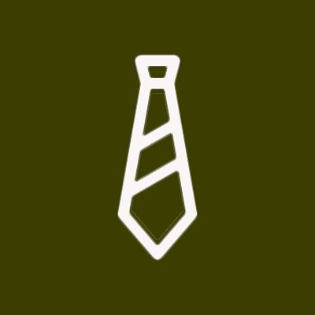
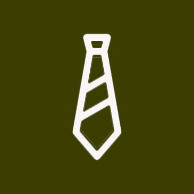

This job was actually the result of two jobs (Team Lead of Events and Team Lead of Communication) merging in the midst of a transitional period where the entire organization’s growth strategy was getting refined. As a result, I had the privilege of shaping the role to best fit my own interests as well as what the org needed next.
The core of my duties involved responding to any and all inquiries sent to the business email and finding ways to work with on campus organizations and teams who wanted to plan events with us. Along with this, I was the point of contact for professors who wanted their classes to have an orientation to introduce them to the space. I’d schedule these and coordinate and confirm with the workers leading the orientation as well as the professor to find ways to personalize the experience to their particular department/subject matter. To understand scale, during the fall semester of 2019, from September to December, I organized 56 orientations with classes of anywhere from 13-35 students each and 1 or 2 staff members working each orientation. At the same time, I worked with my boss to catalogue upcoming events and exciting recent projects made in the space through a bi-monthly newsletter sent out to 4,000+ students and with a 30% read through rate.
A more seasonal duty was overseeing the recruitment process every fall and spring. Each cycle of hiring started with meetings with the other two team leads and our boss to see which roles we needed to fill as people graduated or went abroad and what specific skill sets we would be losing as a team. Those decisions influenced the way we updated our hiring description and application and how long we chose to leave open the application. In each of the four rounds of hiring I oversaw, we had 50+ applicants and selected 12-15 of them to interview. Interview questions and metrics were chosen again by the team of three team leads and we interviewed all applicants in a group interview style to help standardize our selection process. I was also in charge of sending out emails and coordinating all the scheduling and after we chose our new hires, for sending out onboarding emails and documents and rejection emails.
Occasionally, when we had international visitors, as head of communications, I also got to represent the space and help answer questions about the core of what we wanted to accomplish with the space. Talking about intent and how best to serve our target audience has always been a favorite part of the job for me. Along with discussions with visiting academics about these topics, I also encouraged all the team leads to create their own strategic plan each year to help the team better understand the motivation behind each other's efforts.
At the end of my two years in this job role, I helped train the next Team Lead of Communications, a bittersweet way to part with the job that taught me the fundamental basics of practical management.
I was initially hired at the Maker Hub as a general consultant, and through that role I provided general guidance and technical support for students using 3D printers, Laser Cutters, and Embroidery machines as well as all manner of smaller machines and creation techniques. Like all other consultants, I led orientations to introduce students (and other visiting groups) to the features of the makerspace and attended weekly meetings and routine trainings to learn the features of new machinery. I had experience with entrepreneurship and had previously received a grant that partners with the Maker Hub, so I also helped professors incorporate Design Thinking into their coursework and evaluated grant applications to consider which ones should receive university grant funding.
My senior year of high school, I worked with the Go Green Initiative to help change the trash and recycling policies in my hometown. I was the head speech writer and along with a few other students, we spoke to the local garbage service, as well as the rotary club and the chamber of commerce and representatives from local government (the mayor and the head of the school district). In the end, laws were passed to help the town as a whole move towards being better incentivized to separate out our trash.
It was the first time I had been able to see how the community comes together to enact change and I went on the intern for the founder of the international non profit - Go Green Initiative - that following summer. My primary job was managing initial correspondence with prospective global partners - I helped answer generic questions and connected people to the right members of the non profit who could help them further. At the end of any partnerships, I wrote the press releases and sent out donation acknowledgements. The long term project I worked on in any downtime was researching self sustaining cash flow options for non profit organizations as a way to help augment the financial stability of the company.
That summer, I was the only intern and I got to just shadow everyone and ask tons of questions because there was no formalized intern track. A few years later, my mentor and boss reached out asking if I would be in my hometown for the summer and if I’d like to give a speech at an awards luncheon for the projects undertaken by the current class of interns. It was an immense privilege to speak about my experiences and the benefit of being involved in local politics at such a young age through a non profit lens. I shook hands with teachers I’d had in high school and the former mayor who had listened to our speech and taken us seriously even though there had definitely been gaps in our research at times. It was a great full circle moment that has inspired my drive to volunteer in the communities around me ever since.